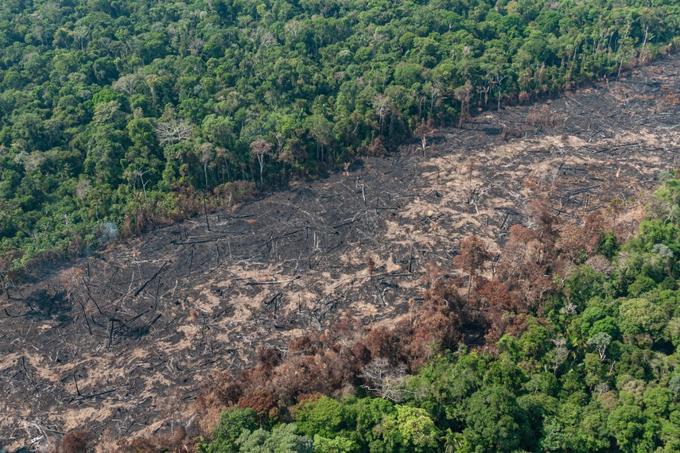
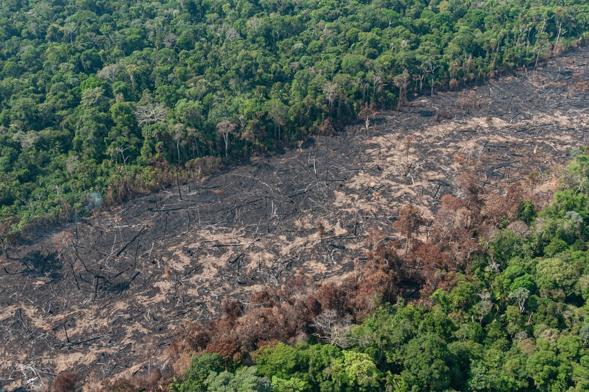

Desmatamento no Brasil: como começou, causas e cenário atual
Entenda como começou o desmatamento no Brasil, quais são as principais causas e as consequências da devastação.
LOGO
Entenda como começou o desmatamento no Brasil, quais são as principais causas e as consequências da devastação.
